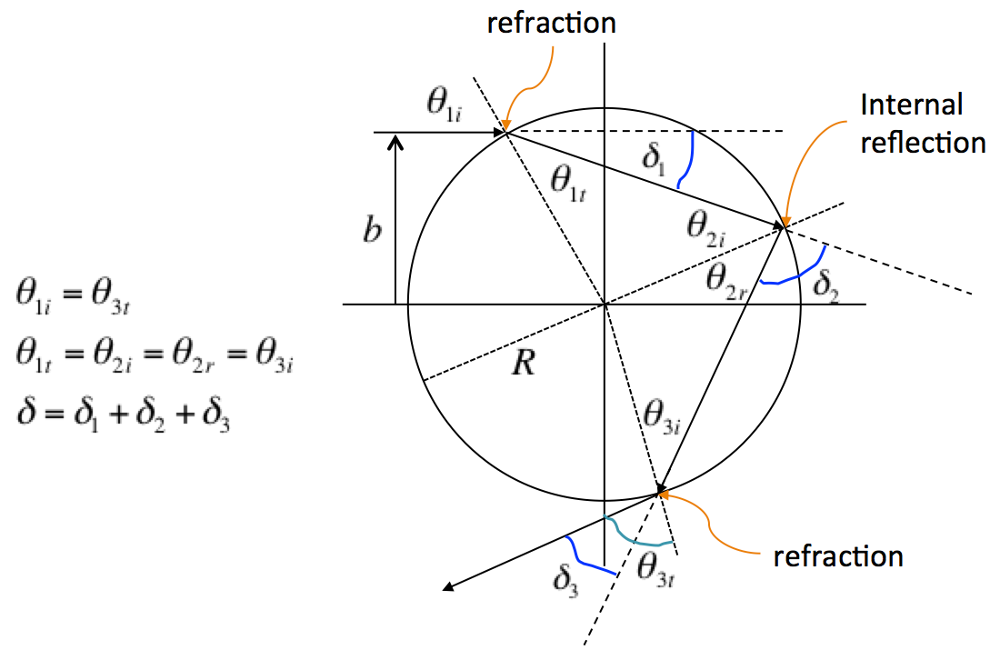

EXERCISE
1: OBTAIN AND USE INFORMATION FROM PEER-REVIEWED LITERATURE
Water
and air are the two materials involved with producing rainbows we may see
in the sky after a thunderstorm. To accurately predict where rainbows will
appear, we need to have accurate information about the refractive indices
of water and air.
(a)
Obtain a copy of “Models for the wavelength dependence of the index of
refraction of water”, Applied Optics 36 (16),
3785-3787 (1997) by Paul D.T. Huibers, and use Eq. (3) of that paper to
generate a plot of the refractive index of water as a function of
wavelength in the range from 400 to 650 nm.
(b)
Obtain a copy of “Refractive index of air: new equations for the visible
and near infrared”, Applied Optics 35(9),
1566-1573 (1996) by Philip E. Ciddor, and use Eq. (1) of that paper to
generate a plot of nair−1,
the deviation of the refractive index of air from unity, as a function of
wavelength in the range from 400 to 650 nm.
Which
material has the larger change in refractive index over the wavelength
range from 400 to 650 nm? Calculate the ratio of the larger change to the
refractive index of the material for a wavelength of 400 nm, and comment
on the magnitude of the ratio.
EXERCISE
2: DEFLECTION ANGLE FOR A LIGHT RAY ENTERING A SPHERICAL RAINDROP
Assume
that a light ray incident on a spherical raindrop at an angle θ1i measured
with respect to the surface normal undergoes one internal reflection
before leaving the raindrop, as shown below.
`
Show
that if θi≡θ1i and θr≡θ1t,
then the deflection angle δ of
the light ray is (in radians):
δ=2(θi−θr)+(π−2θr)(1)
The
deflection angle δ is
the angle between the incident ray and the outgoing ray, and θr is
the angle of refraction for the light ray incident from air and entering
water. To compute the deflection angle, what quantities must be known?
EXERCISE
3: COMPUTE THE DEFLECTION ANGLE VERSUS INCIDENT ANGLE
Generate
a plot of the deflection angle δ as
a function of incident angle θi for
light rays of wavelength 400 nm that experience one internal reflection in
the raindrop. Compare, on the same plot, the deflection angle for light
rays of wavelength 650 nm. The two curves should have minima that are
close to each other, but not identical. What are the values of the
incident angle corresponding to these two minima? Assuming that these
minima correspond to the rainbow direction, what direction do you have to
look relative to the horizontal to see the bright red band of the rainbow?
What direction do you have to look relative to the horizontal to see the
bright violet band? Which band appears higher in the sky?
Near
the minimum of the deflection function (that is, the δ(θi) curve),
are two rays with slightly different incident angles deflected into
different directions? Regarding the brightness of the deflected light
perceived by an observer, what is implied by your answer?
EXERCISE
4: WHERE IS THE SECONDARY (DOUBLE) RAINBOW?
Repeat
the computation of Exercise 3, but now assume that the ray undergoes two internal
reflections within the raindrop. In this case, show that the deflection
angle is given by
δ=2(θi−θr)+2(π−2θr)(2)
and
plot the deflection angle versus the incident angle for rays of wavelength
400 nm and 650 nm. The two curves should have minima that are close to
each other, but not identical. What are the values of the incident angle
corresponding to these two minima? Assuming that these minima correspond
to the rainbow direction, what direction do you have to look relative to
the horizontal to see the bright red band of the secondary rainbow? Can a
ground based observer see these rays? Do the rays that produce the
secondary rainbow enter the top of the raindrop? What direction do you
have to look relative to the horizontal to see the bright violet band?
Which band appears higher in the sky?
Near
the minimum of the deflection function (that is, the δ(θi) curve),
are two rays with slightly different incident angles deflected into
different directions? Regarding the brightness of the deflected light
perceived by an observed, what is implied by your answer?
EXERCISE
5: CRUDE ESTIMATE OF THE IRRADIANCE VERSUS DEFLECTION ANGLE FOR A SINGLE
WAVELENGTH: PRIMARY RAINBOW
Assume
that the each outgoing ray produces an irradiance that is equal to I(θ)=I0exp[−(θ−δ)2] where
here the angles are assumed to be in degrees and the implied width of this
distribution is 1∘.
(For simplicity, we neglect the loss of intensity during refraction and
internal reflection. This is a huge oversimplification, but it allows us
to focus on adding up contributions from each ray.) Sum up the
contributions from rays uniformly distributed over the scaled impact
parameter b~=b/R to
compute the overall irradiance as a function of deflection angle for light
of wavelength 400 nm. Plot the resulting irradiance distribution versus
deflection angle for a single wavelength. How does this plot help explain
why the rainbow is bright?